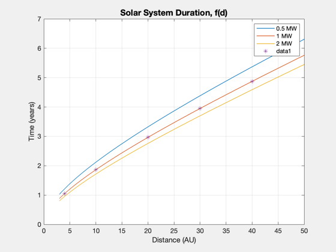
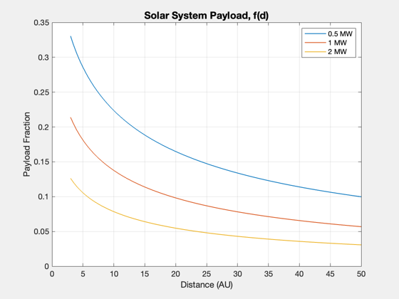
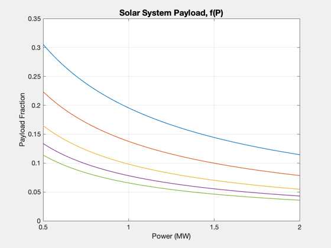
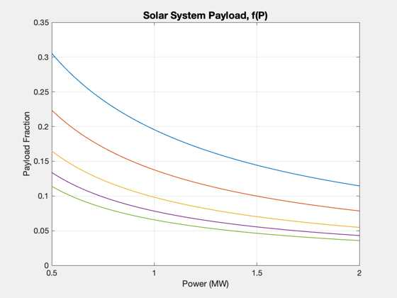

Contents
Solar system performance plot for straight-line trajectories.
Compute the duration to various interplanetary distances for a fixed payload mass. Creates two plots over the solar system distances to 40 au, one a range of distances for fixed power and the second a range of power for fixed distances.
------------------------------------------------------------------------ See also: ComputeDuration, Straight2DStructure, ComputePayloadFraction ------------------------------------------------------------------------
%-------------------------------------------------------------------------- % Copyright (c) 2018 Princeton Satellite Systems, Inc. % All rights reserved. %--------------------------------------------------------------------------
Constants and Engine data
year = 365.25*86400;
au = Constant('au');
d = Straight2DStructure;
d.eta = 0.4;
d.sigma = 750;
d.mP = 1000;
d.uE = 100;
d.f = 0.05;
Time vs. Distance for specific power levels from 0.5 to 2 MW
P = [0.5 1 2]*1e6; dFv = [4 10 20 30 40]; dFs = sort([linspace(3,50) dFv]); tF = []; lambda = []; for j = 1:3 for k = 1:length(dFs) d.dF = dFs(k)*au; tF(j,k) = ComputeDuration( P(j), d ); d.tF = tF(j,k); lambda(j,k) = ComputePayloadFraction( d ); end end Plot2D(dFs,tF/year,'Distance (AU)','Time (years)','Solar System Duration, f(d)'); legend('0.5 MW','1 MW','2 MW') [~,kF] = intersect(dFs,dFv); hold on; plot(dFv,tF(2,kF)/year,'*') Plot2D(dFs,lambda,'Distance (AU)','Payload Fraction','Solar System Payload, f(d)'); legend('0.5 MW','1 MW','2 MW') 
Time vs. Power for specific distances
Ps = linspace(0.5,2); tF2 = []; lambda2 = []; for j = 1:length(dFv) d.dF = dFv(j)*au; for k = 1:length(Ps) tF2(j,k) = ComputeDuration( Ps(k)*1e6, d ); d.tF = tF2(j,k); lambda2(j,k) = ComputePayloadFraction( d ); end end Plot2D(Ps,tF2/year,'Power (MW)','Time (years)','Solar System Duration, f(P)'); legend('Jupiter','Saturn','Uranus','Neptune','Pluto') text(0.95,1.2,'Jupiter','fontsize',12) text(0.95,2,'Saturn','fontsize',12) text(0.95,3.2,'Uranus','fontsize',12) Plot2D(Ps,lambda2,'Power (MW)','Payload Fraction','Solar System Payload, f(P)'); %-------------------------------------- % $Id: 514832611b614871ad96de9cf38aeeb35b365420 $
 
